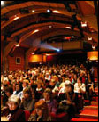
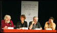

sommaire n°4 2008-2009
La littérature des enfants fait école

Journée d'étude du samedi 15 novembre 2008
A l'initiative des Éditions Casterman, l'École des loisirs, Flammarion-Père Castor et Gallimard Jeunesse, au Théâtre du Vieux-Colombier, à Paris
La littérature des enfants fait école
par Christian Poslaniec
Présentation
Situation internationale de la littérature de jeunesse
par Michel Defourny
Lire

(42:45 mn)
La littérature de jeunesse à l'école : trente années d'évolution. Histoire d'une légitimation
par Max Butlen
Lire

(43:08 mn)
La lecture littéraire à l'école
par Christine Houyel
Lire

(49:47 mn)

Rencontre avec quatre auteurs : Nadine Brun-Cosme, Pef, François Place, Claude Ponti
animée par Nathalie Brisac et Nicole Verdun